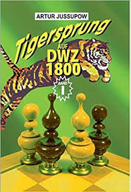
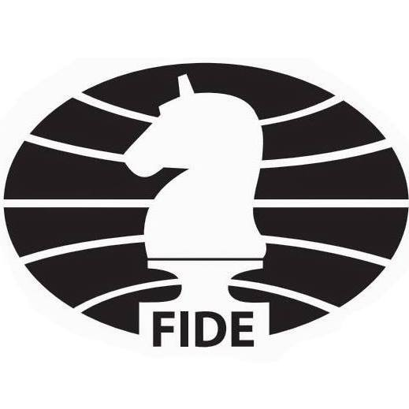

The living example of technological progress. To make an efficient move a chess engine usually analyzes thousands of outcomes before it does. Since the hardware and programming techniques are getting better year by year, chess engines are becoming more intelligent. Modern engines are more selective and have a better positional understanding.
Here you can find actually rank of chess enignes
TO CHESS ENGINES

A big chess legend A.Yusupov has written a huge manual for chess amateur. From beginner to expert in 10 volumes he presents every important chess topics like: Tactics, Strategy, Positional Play, Endgames, Calculating Variations, and Openings. This book has been awarded the prestigious Boleslavsky Medal from FIDE (the World Chess Federation)
as the best instructional chess books in the world. The book cover and satin paper might only embelishes every library.
TO Tigersprung
It's not only a usually bookstore. The Niggemann's has a huge selection of every aspect of the game's kings.
If you're looking for a good chess store, well-equipped you have to visit it.
TO Bookstore

Check current high-rated chess players in the world.
TO FIDE LIST